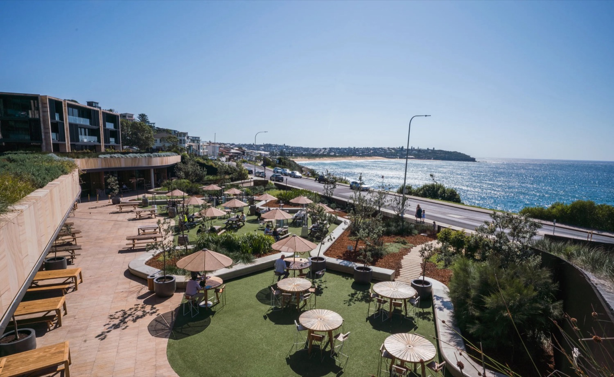
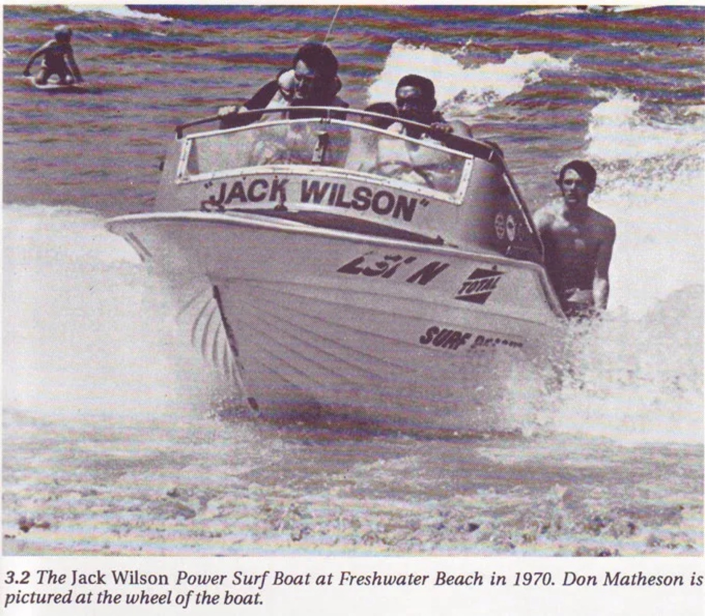
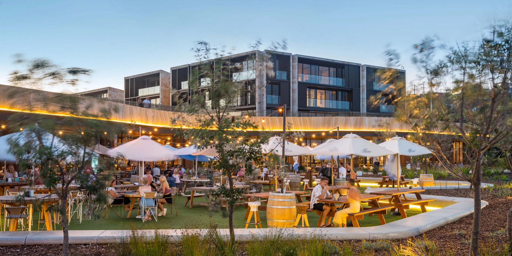
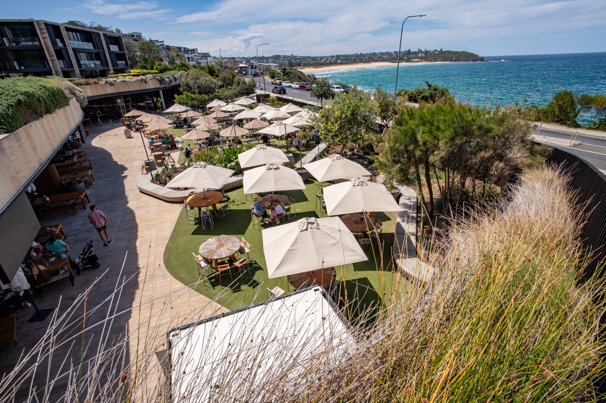

Our story
From a beach hut to the headland.




Soldiers resting by their tents.
-
Harbord Diggers is born
Returned Diggers wanted a place to meet and share their stories over a cold beer.
-
A hut by Freshwater beach
Members met at an old hut by the beach. Billy teas were served to holiday makers, with the money raised going to members and families in hardship.
-
The storm
A storm washed the hut away, and members moved to a club member's residence.
-
The old barber shop
The club relocated to Wilsons Old Barber Shop on Moore Road.
-
The headland
With the help of community leaders, the club lobbied for the headland where it stands today, and building commenced.
-
Stars in the auditorium
The club expanded, and stars from around the world played the auditorium to massive crowds.
-
An Australian icon
By the late 1980s, Harbord Diggers was one of the most iconic clubs in Australia.
-
Mounties Group steps in
With a vision to revamp the club.
-
Approval for a new venue
Development approval was granted for a new Harbord Diggers.
-
Construction begins
-
The new Harbord Diggers opens
Stage One opened its doors.
-
Stage Two completed
Fitness, aquatic and the Watermark Freshwater retirement residences.